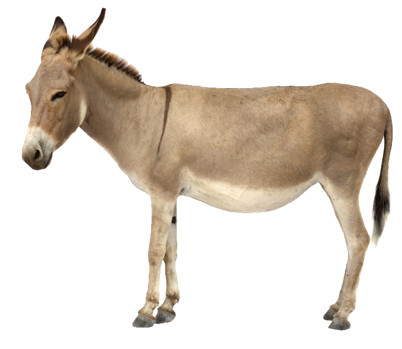

<hr>
<h5>The following donkey has been brought to this JSP from an external file, "external_file.html".</h5>
<h6>To know more about the contents of this folder, head on to <a href="C:\Program Files\Apache Software Foundation\Tomcat 9.0\webapps\practice2"> this </a> location.</h6>

<hr>
